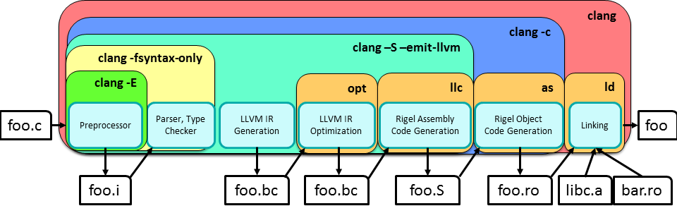

Compiling Code for Rigel
Glossary
- Host: The machine running the Rigel simulator or compiler toolchain
- Target: The simulated Rigel system itself
Toolchain
The Rigel compilation toolchain is based on Clang 2.8, LLVM 2.8, and GNU Binutils 2.18.
The sequence of tools used to compile a C program to an executable binary is shown in the figure below.

- The clang binary is used as a compiler driver; that is, it automatically invokes a sequence of other tools for parsing, compiling, optimizing, assembling, and linking.
- clang is used as a cross-compiler by passing the argument -ccc-host-triple rigel-unknown-unknown.
- For the rigel-unknown-unknown target, clang will call out to GNU as and GNU ld (with binaries named rigelas and rigelld to distinguish them from the system versions) for assembly and linking.
- clang itself performs source preprocessing, parsing, and semantic analysis, and lowers the generated AST to LLVM's SSA-based IR.
- You can tell clang to only preprocess a file by passing -E, or only preprocess, parse, and analyze by passing -fsyntax-only.
- Like other compiler drivers, clang can compile to an object file with -c, or emit assembly code with -S.
- clang can also emit bitcode or textual versions of the LLVM IR by passing -c -emit-llvm or -S -emit-llvm respectively.
- To emit completely unoptimized IR, use something like clang -S -emit-llvm -mllvm -disable-llvm-optzns foo.c -o foo.ll.
- For other flags, see the User Manual, keeping in mind that we are using version 2.8 and may not support some features listed.
File Extensions
- Rigel object code files have the extension .ro as opposed to the usual .o to avoid confusion with host object files.
- Static libraries have the usual extension, .a.
- When dynamic linking support is added, shared libraries will have the usual extension, .so.
- Due to a historical artifact, our convention is to give target executables the extension .tasks.
Example
$RIGEL_TARGETCODE/src/Makefile.common has a set of flags that mostly automate the process of compiling C code for Rigel. $RIGEL_TARGETCODE/src/benchmarks and $RIGEL_TARGETCODE/src/testing have additional Makefile scaffolding that minimize the amount of boilerplate required for individual benchmarks or test codes. For example, here we compile and run the complex test code.
mrj10@mjlap:~/rigel$ cd $RIGEL_TARGETCODE/src/testing/complex
mrj10@mjlap:~/rigel/targetcode/src/testing/complex$ cat Makefile
BENCHMARK_NAME = complex
SOURCES_C = complex.c
EXTRA_CFLAGS =
EXTRA_LDFLAGS = -lm
include ../Makefile.common
mrj10@mjlap:~/rigel/targetcode/src/testing/complex$ cat complex.c
//conversion of a real number from its Cartesian to polar form
#include <stdio.h>
#include <complex.h>
#include "rigel.h"
int main(){
if(RigelGetThreadNum() == 0) {
SIM_SLEEP_OFF();
double complex z = -4.4 + 3.3 * I;
double radius = cabs(z);
double argument = carg(z);
double x = creal(z);
double y = cimag(z);
printf("cartesian(x,y):(%4.1f,%4.1f)\n",x,y);
printf("polar(r,theta):(%4.1f,%4.1f)\n",radius,argument);
}
return 0;
}
mrj10@mjlap:~/rigel/targetcode/src/testing/complex$ make
/home/mrj10/rigel/install/host/bin/clang -ccc-host-triple rigel-unknown-unknown -Qunused-arguments -nostdinc -I/home/mrj10/rigel/install/host/lib/clang/2.8/include -I. -I/home/mrj10/rigel/install/target/include -I/home/mrj10/rigel/sim/rigel-sim//includes -DLLVM28 -DRIGEL -O3 -ffast-math -fomit-frame-pointer -D"CLUSTER_LOCAL_TQ" -DINNER_LOOP_C -Wall -c complex.c -o complex.ro
/home/mrj10/rigel/install/host/bin/clang -ccc-host-triple rigel-unknown-unknown -Qunused-arguments -nostdinc -I/home/mrj10/rigel/install/host/lib/clang/2.8/include -I. -I/home/mrj10/rigel/install/target/include -I/home/mrj10/rigel/sim/rigel-sim//includes -DLLVM28 -DRIGEL -O3 -ffast-math -fomit-frame-pointer -D"CLUSTER_LOCAL_TQ" -DINNER_LOOP_C -Wall complex.ro -Xlinker "--oformat=elf32-bigmips" -Xlinker "-T/home/mrj10/rigel/install/target/lib/linker/rigel.ld" -static -lm -lpar -lm -o complex.tasks
/home/mrj10/rigel/install/host/bin/rigelobjdump -d -mmipsrigel32 complex.tasks >complex.obj
rm complex.ro
mrj10@mjlap:~/rigel/targetcode/src/testing/complex$ $RIGEL_INSTALL/host/bin/rigelsim complex.tasks
RigelSim Compiled by mrj10 on Feb 26 2012 at 15:10:55 from Git commit:
commit bd236f7fb1544758e436ba5c810b644184e4aa25
...
...
cartesian(x,y):(-4.4, 3.3)
polar(r,theta):( 5.5, 2.5)
core 0 (local 0) thread 0 halting @ cycle 93708, PC 0x00000068
Simulation exiting. Reason: System-wide halt
Under the Hood
clang has a couple useful options to debug interactions between the components of the compilation flow.
- -v toggles verbose mode, which prints all subtool invocations to the screen so you can verify their correctness or try them yourself.
- -save-temps saves the temporary .i, .s, and .ro files it creates en route to a .tasks binary.